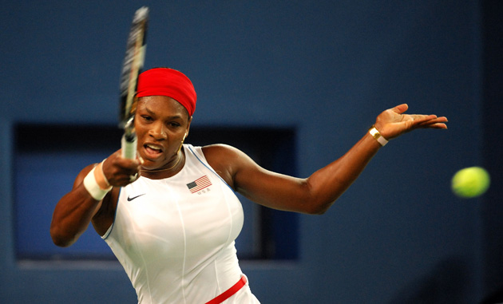
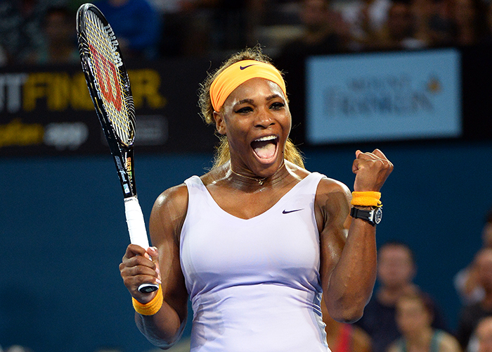
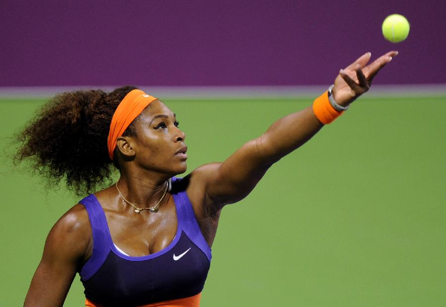

小威廉姆斯
塞雷娜·威廉姆斯，全世界第一位网球大满贯黑人女单冠军，单打最高世界排名第一，21座大满贯女单冠军得主，网球史上第二位女子单打生涯金满贯得主。她的姐姐维纳斯·威廉姆斯亦是著名女子网球选手，故常称呼其为"小威"。
塞雷娜·威廉姆斯，全世界第一位网球大满贯黑人女单冠军，单打最高世界排名第一，21座大满贯女单冠军得主，网球史上第二位女子单打生涯金满贯得主。她的姐姐维纳斯·威廉姆斯亦是著名女子网球选手，故常称呼其为"小威"。

塞雷娜·威廉姆斯（英语：Serena Williams，1981年9月26日－），生于美国密歇根州，通常称为小威，为当今世界著名的美国网球女子巨星，网球史上最伟大的女子选手之一，美国体育史上最佳女子网球选手（与Chris Evert并列），全世界第一位网球大满贯黑人女单冠军，单打最高世界排名第一，21座大满贯女单冠军得主，网球史上第二位女子单打生涯金满贯得主。
她的姐姐维纳斯·威廉姆斯亦是著名女子网球选手，故常称呼塞雷娜·威廉姆斯，简称"小威"，而维纳斯则为维纳斯·威廉姆斯、大威。塞雷娜·威廉姆斯是第12位登上WTA单打排名第1的选手，共先后六度登顶，并与维纳斯·威廉姆斯在2010年登上女双世界第一，同时包办单双打世界第一头衔。
塞雷娜·威廉姆斯于2002年法国网球公开赛至2003年澳大利亚网球公开赛连续四届大满贯女单赛事夺冠，成就跨年版的大满贯，史称塞雷娜大满贯，而她的决战对手皆为维纳斯·威廉姆斯，因此又有人称为姊妹大满贯；并于2015年温网再度达成跨年大满贯，且于2010年法网与维纳斯·威廉姆斯共同完成女子双打的跨年大满贯，以上纪录迄今无人能及。截至目前共获得21座大满贯单打冠军（四大满贯冠军均至少拥有三座），公开赛时代以来排名第二高，亦为第三位能完成三次生涯大满贯的选手。
塞雷娜·威廉姆斯的发球，被评为女子网球有史以来最佳发球，角度好、力量大、落点精准，尤其在2012年溫布爾登锦标赛，总共发出102记Ace球，创下记录。
2012年伦敦奥运会，塞雷娜·威廉姆斯获得网球女子单打金牌，由而成为网球史上第二位女子生涯金满贯得主，同时也获得网球女子双打金牌，成为“双金王”，更成为史上唯一同时拥有单打生涯金满贯和双打生涯金满贯的网球选手。
2009年
塞雷娜·威廉姆斯在美联社年度最佳性运动员奖以66票高票成为总冠军，其他候选者均不多于18票。
在2009年的比赛中，小威参赛数量极其有限，但她在大赛中总能有上佳表现。该年度，在澳网、温网两项大满贯赛事中，小威都夺得冠军。法网她闯入8强，不敌后来的冠军库兹涅佐娃。而美网半决赛因为对裁判判罚不满而言辞过激，从而遗憾败在克莉丝特丝，无缘卫冕。
在年终总决赛中，她连胜5场最终夺冠。不仅如此，她也在除法网以外的三大满贯的女双比赛中和姐姐维纳斯·威廉姆斯联手三度夺魁，出色的表现使得她单赛季奖金总数突破600万美金，打破了海宁在2007赛季创下的奖金纪录。她也获颁当年劳伦斯最佳女运动员奖。

2010年
澳网决赛顺利击败复出的海宁，拿下生涯第十二座单打大满贯冠军，不仅使其成就个人第十二个大满贯冠军头衔，追平了美国传奇名将比利·简·金夫人，而且也成为公开赛时代以来获得澳网女单冠军次数最多的选手。
不仅如此，她和姐姐大威也在澳网的女双决赛中卫冕成功。红土比赛罗马站比赛中，闯入半决赛，苦战不敌扬科维奇。马德里站比赛打入第三轮，被佩特洛娃逆转。马德里站女双比赛中和姐姐大威廉姆斯夺冠，法网比赛打入八强，苦战不敌斯托瑟，但随着姐妹二人夺得法网女双冠军，两人登上了女双世界排名第一。在2010年6月7日的WTA世界排名中，姐妹二人不仅包揽女单排名前二，而且也垄断了女双世界排名第一。
2011年
因肺栓塞及脚伤休养近一年的小威，在6月于英国伊斯特本的巡回赛中复出，首轮以三盘比数(1-6 6-3 6-4 )，击败保加利亚好手茨维塔纳·普琳可娃，于第二轮比赛输给俄罗斯高手菲拉·芝弗瑞娃。
而于六月底的温网第四回合输给当时的前温网亚军法国巴托莉。之后在夏季创下12连胜的佳绩，豪取斯坦福、多伦多两巡回赛冠军，于美网中亦闯入决赛，爆冷败给当年的女单冠军澳大利亚斯托瑟。
2012年
年初在澳大利亚的布里斯班网赛打进八强后退赛，之后于1月底之澳网仅进入第四轮就输给俄罗斯选手玛卡洛娃，休息几个月在三月下旬举办有第五大赛事美称的迈阿密大师赛中表现平平，八强输给丹麦甜心沃兹尼亚奇。
随后进入红土赛季后，原本在红土赛场上并没有太大优异表现的小威，状态神勇。连拿查尔斯顿及马德里两座冠军，且在罗马赛事中也进入了四强，法网前被视为夺冠大热门，却意外在法网首轮大爆冷门输给法国本土选手，维吉妮·拉扎诺，首次在大满贯赛事首轮出局。
在温网第一周表现平平，第三回合苦战打赢中国郑洁、第四轮也被逼到第三盘才以6-1,2-6,7-5力克哈萨克耶雪芙多娃。进入第二周赛事状态开始回复，接连以直落二，打败了2011年温网冠军科薇妥娃及年初澳网冠军的阿莎莲卡。在决赛中克服第二盘因雨暂停后的乱流，最终以6-1,5-7,6-2击败波兰年轻好手拉德万丝卡。拿下生涯第五座温网女单冠军，并与姐姐维纳斯·威廉姆斯并列现役选手中拥有最多温网冠军的女子选手。
2012年伦敦奥运会夺得女单金牌，为史上首位单打双打都达成金满贯纪录的球员。
美网比赛中，前六轮仅丢19局，一路横扫进入决赛，决赛面对世界第一阿莎莲卡时，首盘6-2获胜后第二盘2-6输掉并在决胜盘3-5落后的情况下连下4局完成逆转，第四度赢得美网冠军。
美网后小威因感冒退出中国公开赛，休息一段时间后，在伊斯坦布尔WTA年终大赛小组预赛里一盘未失，三战全胜晋级半决赛，随即在四强中轻取波兰好手拉德万丝卡。决赛遭遇同样预赛全胜的莎拉波娃，莎娃在四强中也强势地以6-4,6-2淘汰当时球后阿萨兰卡，最终小威仍以6-4,6-3，连续第九次打败莎拉波娃，拿下个人第三座年终大赛冠军。
2013年
年初在布里斯班赛赢得本季第一座冠军，澳网八强以6-3,5-7,4-6，爆冷输给同胞新星斯洛恩·斯蒂芬斯。卡达赛决赛以6-7,6-2,3-6不敌阿莎莲卡。但由于他在四分之一决赛时击败科薇妥娃所以10590的积分成为最老球后，这是塞雷娜·威廉姆斯第六度登上世界第一。
进入红土赛季后，小威状况极佳，连夺马德里大师赛与罗马大师赛双料冠军，强势进入法网赛事。一如赌盘看好，小威在前四轮仅失10局，四强战时与2009年法网冠军库兹涅佐娃激战三盘，以6:1,3:6,6:3胜出，回报当年被打败的纪录。半决赛以落叶扫秋风之姿以6:0,6:1击败艾拉妮,睽违11年再闯冠军战。冠军赛对上莎拉波娃，延续生涯对战12连胜的绝对优势，终场以6:4,6:4粉碎莎娃的卫冕之路，笑拥第2座法网金杯，对莎拉波娃的对战纪录也推至14胜2败、13连胜。同时个人生涯连胜纪录更推至最佳的31连胜，大满贯金杯也累积至16座。
紧接着温网到来，本届温网被封为最鬼谲的一届，男女单重量级种子皆于第一、二轮出局，塞雷娜·威廉姆斯则安然渡过，于第三轮时更与最老挺进女单的42岁日本球星伊达公子对抗拿下6:2、6:0的成绩。但于第四轮时遭遇“法网冠军杀手”萨比娜·利斯基，以2:6、6:1、4:6于16强止步，生涯最佳连胜纪录也终止于34连胜，无缘超越维纳斯·威廉姆斯35连胜的纪录。
在温网出局后，塞雷娜·威廉姆斯第一次来到瑞典参加瑞典公开赛，并在比赛开始之前，率先取得年终赛参赛资格。小威最终以6:4、6:1击败地主选手拉森(Johanna Larsson)拿下冠军。本赛事为红土球场，在以往并不擅长的红土赛，小威夺得本赛季第7冠、红土第5冠，取得红土连胜纪录推至28连胜，表现优异。
美网前的大赛罗杰斯杯，塞雷娜·威廉姆斯仍然强势晋级，寻求本季第八冠。在16强以6:0、6:3淘汰佛利普肯斯，八强再以6:1、6:1打败玛格达莲娜·里芭莉科娃，挺进四强，与第三种子拉德万斯卡对决以7:6、6:4晋级决赛，两人生涯对战纪录来到6胜0负，小威目前六连胜。决赛对决非种子选手瑟丝蒂，以6:2、6:0以一盘未失之姿夺得本赛季第8冠，追平个人生涯单一赛季最多冠军纪录，更有机会继续挑战WTA职业纪录。
紧接着与罗杰斯杯同等级的辛辛那提大师赛，小威将寻求在该赛的第一座冠军。小威曾五度参赛，但最好名次仅于2006年进入四强。在16强赛中，以6:4、6:1打败排名32的莫娜·巴特尔；四分之一决赛中再以6:0、6:4轻取哈勒普，睽违七年再闯四强，并以7:5、7:5打败卫冕者李娜，首闯辛辛那提大师赛的决赛。但在决赛先盛后衰，对战亚萨莲卡以6:2、2:6、6:7无缘拿到该赛首座冠军，两人的生涯对战纪录以来到15胜3败，尤其在本赛季已第二次被打败。
美网塞雷娜·威廉姆斯名列头号种子，将寻求卫冕及第5座美网冠军。在开赛之前的访问，小威以表示她现在最渴望得到混双冠军，尤其是法网混双，原在今年法网要与罗德拉搭挡混双，但他在最后一刻退赛。美网首轮以6:0、6:1击败2010年法网冠军斯基亚沃妮，这是小威在本赛季的重要比赛中，击败的第4位前法网球后。紧接着一路晋级，第五轮更以6:0、6:0完封西班牙娜瓦洛(Carla Suarez Navarro)，成为继娜拉提诺娃之后，第二位于美网八强完封对手的选手。半决赛对上第一次进入四强的李娜，以6:0、6:3获胜，更从16强、八强与半决赛中缔造连下24局的纪录，并一盘未失之姿进入决赛，将阿莎莲卡再次争夺美网冠军。决赛当天球场出现强风，也因此让小威发球时有不顺，也因此二次摔拍泄愤。在第一盘获胜后，原本第二盘就可顺利夺冠，但阿莎莲卡展现强大的韧性，将比数追至6:6进入决胜局，小威也因此输掉第二盘，本届美网首次输掉一盘，但在最后决胜盘时，小威以6:1快速地顺利夺冠，生涯首度在美网顺利卫冕，成为史上第二位拥有5座美网冠军的球员，是史上最年长的球后，更是第一位在30岁后夺得4座大满贯的球星。
接着进入亚洲赛事，塞雷娜·威廉姆斯原订将参加泛太平洋公开赛与中国网球公开赛，但她表示，由于今年夏季参加太多场比赛，她将放弃东京赛，直接参加中网。小威除了单打之外，将与持外卡参赛的姐姐维纳斯·威廉姆斯一同角逐双打冠军。再者，小威还要挑战女网史上第一位单季奖金达1000万美金的选手，本赛季在美网结束后，她已累积至912万美金，除了中网赛程外，更有年终赛的奖金等着她，此项纪录对她而言可说是有相当概率可以达成。
中网开打后，小威在单打赛事方面一路过关斩将，毫无意外在四分之一决赛中以6:4、6:1打败沃兹尼亚奇挺进四强，这是她在2004年首届参赛并夺冠后，第二次参赛。在四分之一决赛后的访问，小威的教练对于她比赛时已不需要申请教练的情况表示“她自己有足够的解读比赛的能力”，小威也顺势回应“这说明我越来越成熟了。”她也说作为一个32岁的老将，在本赛季70胜如此优异的表现:“现在的感觉太好了，这是我在赛季开始时没期望过的，这对我来说是一个巨大的奖励。”但小威与大威搭挡双打却意外失足，在赛末点甚至发出双误，首轮即出局，赛后小威也不断摔拍宣泄怒气。半决赛以两个6-2轻取拉德万丝卡，决赛打出与四强时一样的比数，重挫来自塞尔维亚，近期状态有所回升的杨柯维奇，第二度拿下中网冠军，同时也是个人年度第十个冠军，成就当今女子网坛无人可敌。
随着赛季尾声到来，每年度最精彩的年终赛也开打了。塞雷娜·威廉姆斯与拉万丝卡、科薇妥娃、科贝尔同组，赛前总对战成绩为13胜1负，拉万丝卡6胜、科薇妥娃4胜、柯伯2胜1负，对小威来说油如胜券在手。在分组循环赛中，小威一如预期的，以3胜的表现率先抵达4强，且在循环赛中未失一盘。半决赛对战扬科维奇，却打的异常辛苦，次轮发球更慢，但最后以6:4、2:6、6:4晋级。决赛对决首次晋级年终赛决赛的李娜，以2:6、6:3、6:0获胜，从次轮3:3平手时更是连下9局，夺下第4座年终总决赛冠军，单季总奖金更缔造女网新纪录1238万美金。
2014年
塞雷娜·威廉姆斯年初在布里斯班赛赢得本季第一座单打冠军，卫冕成功。
澳网开打小威一如外界看好，在高温中皆以直落二，一路挺进16强，但在16强却以6-4,3-6,3-6，输给塞尔维亚的伊万诺维奇，比去年止步8强退步，无缘寻求第六座澳网冠军。在赛前小威曾透露想与费德勒搭档，挑战混双冠军，达成混双大满贯，但因与维纳斯·威廉姆斯参加女双赛事，不得不打消念头，她指出32岁的年龄无法3线开打。小威在单打晋入16强后，因大威左腿受伤，退出女双竞争。
由于塞雷娜·威廉姆斯在澳网期间的背伤复发，使得未来的赛程出现变数，在多哈公开赛与阿莎莲卡一样，都选择退赛，让本届赛事出现去年决赛选手届退赛的情况。而小威因为背伤，也将退出已连续13年未参赛的印第安维尔斯大师赛，原先期待小威再次登场的希望也落空，她曾在那获得两座冠军。小威的官方赛程将是下一场大赛迈阿密大师赛，但因为获得迪拜网球冠军赛的外卡，将提前复出，她将和维纳斯·威廉姆斯一同出赛。
小威在迪拜女网赛首轮轮空，第二轮对战玛卡洛娃首盘苦战，比赛进入决胜局后一路拉锯，最后以7-6(10-8)拿下，并在第二盘送出6:0。八强战对决扬科维奇以6-2、6-2胜出，在赛中又再度与她起争执，原因是对发球准备时间快慢不满。半决赛与科内特争取决赛门票，却出师不利，以4-6,4-6输球，无缘与维纳斯·威廉姆斯近行第23次的姊妹对决。
迈阿密大师赛，小威在128签中首轮轮空，第二轮遭遇雪芙多娃，以7-6(9-7),6-2胜出，第三轮遭遇法国的加西亚(Caroline Garcia)，苦战三盘才以6-4,4-6,6-4胜出，此前两次交手小威只让她拿下6局，赛后小威也坦言现在像是一个业余选手，表现并不好，这场比赛他打出41次非受迫失误。第四轮的对手为可可·范德维奇，在这场比赛小威的状况回稳，以6-3,6-1轻松晋级；紧接着八强对上科贝尔，也展现球后实力以连下两个6-2进入半决赛。半决赛塞雷娜·威廉姆斯再度对上了去年决赛的对手莎拉波娃，比赛一开始小威就遭到破发，随后莎娃一路将比数拉开到4-1，但接下来小威再次展现它过人的心理素质，第10局以love game，连下5局夺下首盘；第二盘小威又率先被破发，但在第三局回敬一个破发，到了第六、七局时，小威以连夺八分，4-3抢下优势地位，到了第九局莎娃面临非保不可的发球局，一度拥有3个局点，但小威仍强势让比赛出现赛末点，整场发出8个ACE，最终以6-4,6-3进入决赛，塞雷娜·威廉姆斯也将与莎拉波娃的战绩拉开到16胜2负的15连胜。决赛对决首度进入皇冠赛决赛的李娜，首盘李娜非常强势的将比数直接拉开到5-2，但从第8局开始小威展现实力，连下5局逆转夺下首盘，尤其是第10局在李娜的发球局，李娜成功打出一个大角度的外角发球，但小威却打出一个更强劲的正手外角致胜球，在此之后，李娜的气势便大受影响，第二盘的节奏完全被小威掌控，终场以7-5,6-1拿下第七座迈阿密大师赛冠军，并收下与李娜对战的11胜1负的10连胜，也成为赛事上最多冠军的选手，更是WTA中第四位在同一赛事夺下七座以上冠军的球星。
迈阿密结束后，塞雷娜·威廉姆斯紧接着参加了WTA唯一的绿土比赛--家庭生活轮杯，但在轮空后第二轮被斯洛伐克的塞皮洛娃(Jana Cepelova)以4-6,4-6输球，无缘挑战绿土三连冠。赛后小威回应，她认为从去年开始参加了大量的比赛，感觉快要累死了，现在需要休息一下，也认为这对接下来的红土赛季很有帮助。
塞雷娜·威廉姆斯在马德里大师赛将寻求卫冕与三连霸的机会，但由于左腿伤势的关系，不得不在八强提前退赛，以被罗马与法网的准备。进入罗马大师赛后，小威伤势复原状况良好，一路挺进四强，遭遇前法网冠军伊万诺维奇，以6-1,3-6,6-1获胜，伊万本赛季状况良好，已夺下2个冠军，并在澳网阻挡小威前进八强，此次小威可说是快意复仇。决赛遭遇地主选手艾拉妮，再度重现去年法网的态势，以6-3,6-0横扫卫冕罗马赛冠军，拿下生涯第60座冠军，赛后她表示缺席马德里让她心情糟透了，因此此次罗马赛有强烈的夺冠渴望，当然也对自己带伤出赛而夺冠感到不可思议。塞雷娜·威廉姆斯并期许今年至少有一个大满贯，不管是否为即将到来的法网。
进入罗兰·加洛斯赛场后，塞雷娜·威廉姆斯以头号种子出赛，并顺利的闯过首轮比赛，避免重蹈2012年的惨况，但却无法阻止今年法网女单爆冷的气氛，在李娜首轮出局后，小威和姐姐大威在第二轮就遭到淘汰，其中小威还以难堪的2-6,2-6输球，堪称是生涯在大满贯最差表现。赛后小威表示打球有时状况不好，希望不要在大满贯，但还是发生了，她必须回家花5倍努力，来预防再次发生。她的卫冕失败也宣告红土赛季提前结束。
依照往例，塞雷娜·威廉姆斯不会参加溫布爾登锦标赛前的草地赛事，本届温网小威以头号种子的身份出战女子单打，并与维纳斯·威廉姆斯搭挡出战女子双打。首轮面对同胞美国球手塔蒂许薇莉（Anna Tatishvil）i，仅花了61分钟以6-1、6-2晋级；第二轮展现在草地的良好状态，迅速以6-1、6-1，49分钟拍落南非的斯奇佩尔斯（Chanelle Scheepers）。第三轮对上在迪拜击败她的法国第25种子科内特，首轮因雨中断，恢复比赛后以6-1领先，但在第二轮，小威明显发球不顺，而科内特则频频调球至网前，让本身走位并不擅长的小威反应不及，后两盘以3-4、4-6止步第三轮，双方在总得分皆为90分，致胜球小威29球、科内特28球，但非受迫性失误小威29球明显比科内特18球高出许多。赛后小威表示并不清楚在哪里发生问题，她说在澳网时表现不佳，法网则是烂透了，但温网还不错，要回去再研究。这也是小威廉斯进8年来首次无法抵达16强。接着二日后小威与大威继续进行女双赛事，但受病毒感染，小威明显得出现手眼不协调的问题，不但无法顺利发球，更在球僮抛球时无法准确接球，在自己首个发球局以4个双发失误结束，以0-3退出赛事。小威表示对退赛感到心碎，原先以为能在比赛前恢复，但显然没有好转，我真的很想继续比赛，只可惜我的身体并不允许我这么做。
经过了温网的低迷状态，小威廉姆斯在北美秋季硬地赛场迅速复苏。连续夺下斯坦福站和辛辛那提两站比赛冠军，在罗杰斯杯也是闯入四强。锁定美网系列赛冠军的小威在美网上展示出强大的统治力，七场比赛不失一盘，且单盘比赛最多只让对手拿到三局，战胜了卡内皮，佩内塔，玛卡洛娃，沃兹尼亚奇等众多硬地好手之后，捧得自己的第18座大满贯奖杯，追平埃弗特和纳芙拉蒂诺娃的纪录的同时也收获400万美元的巨额奖金。
2015年
塞雷娜·威廉姆斯年初放弃在布里斯班的卫冕站，选择和伊斯内尔共同代表美国出战霍普曼杯。霍普曼杯上小威状态不佳，接连输给从未正式输过的包查和拉德万斯卡，最后美国队在决赛以1：2不敌A拉德万斯卡和扬诺维茨率领的波兰队，获得亚军。澳网比赛小威签运凶险，次轮遭遇复出的前世界第二兹沃娜列娃，第四轮对阵去年法网横扫自己的西班牙好手穆古鲁扎，小威在比赛中表现略有起伏，先后逆转了几位对手。进入八强之后，小威接连两盘击败齐布尔科娃和刚刚淘汰大威廉姆斯的美国新秀凯斯，决赛遭遇已经15连败于自己的莎拉波娃，最终小威以6-3,7-6(7-5)，拿下个人第六座澳网单打冠军，同时也是自己的第19座大满贯冠军，超越传奇巨星艾弗特和纳芙拉蒂洛娃，公开赛年代单打大满贯仅次于格拉芙。
小威廉姆斯在澳网之后选择和姐姐携手出战联合会杯，结果美国队轻松横扫阿根廷队进入下一轮。接下来，小威廉姆斯选择出战自己和姐姐抵制多年的印第安威尔斯站比赛，戏剧性的是小威进入四强后保送自己对手哈勒普进入决赛。在迈阿密站比赛中，小威接连战胜利斯基、哈勒普、纳瓦罗等好手，第八次捧起迈阿密站冠军，也是继2013年之后的三连冠。
进入红土赛季，小威在联合会杯对阵意大利的比赛中逆转埃拉尼，为美国独取两分，但美国队仍然2：3不敌意大利止步。在接下来的马德里站中，半决赛对阵从未输过的科维托娃，小威状态不佳被两盘淘汰出局。罗马站比赛进入十六强后赛前退赛给同胞麦克哈尔。法网比赛，小威接连对阵阿扎伦卡、斯蒂芬斯、埃拉尼、巴辛斯基等好手，结果小威除首轮和对阵埃拉尼的1/4比赛之外，一路三盘苦战晋级决赛。决赛对阵捷克猛将萨法洛娃，第一盘苦战获胜，第二盘4:1大幅领先的情况下状态出现下滑，被拖入抢七且被对手拿下第二盘，决胜盘先被破发的小威爆发能量，逆转对手夺取个人第三座法网冠军，也是第20座大满贯单打冠军。
温网比赛中，小威在第三轮对阵本土小将沃特森的比赛中，决胜盘0:3落后的情况奋起反击逆转对手，接下来小威接连击败大威廉姆斯、阿扎伦卡、莎拉波娃等强手晋级决赛，决赛面对西班牙好手穆古鲁扎，首盘先被破发的情况下以6:4逆转，次盘5:1领先的情况下被破掉两个发球胜赛局，但在对手发球局接连拿下三个赛点并以6:4取得胜利，获得个人第六座温网冠军的同时，完成第二轮塞雷娜全满贯（从2014年美网开始），也改写了纳芙拉蒂诺娃1990年温网封后时33岁263天的纪录，成为开放年代以来年纪最大的大满贯冠军；而21座大满贯冠军更直逼22座的格拉芙。
2007年复出以前，小威的技术风格以偏力量型为主。快速的发球，强力的正反拍赋予了小威强大的攻击实力。2007年之后，随着年龄增长和体能的下降，小威的技术开始转变为讲究好的发球，并减少来回的快速打法，其发球速度快且力量角度皆大，并能落在接近边线的位置，被誉为WTA有史以来的最佳发球。而其接发球的实力甚至可以直接影响对手的心理状态，使她们的回击和发球局产生失误。2013年，小威的技术风格持续改良变化，在32岁之际除了保持快速接发球的打法以外，来回对抽时也更有耐心，且时能击出落点于发球区边线的大角度回击，并主动运用上旋球，下旋削球等技术和对手展开多次互抽，其抽球实力的增加也帮助她时隔11年再次夺得法网冠军。
小威最大的武器是她强大的心理素质。在多次比赛中，小威都曾上演翻盘好戏，其中2003年澳网半决赛决胜盘1-5落后逆转克里斯特尔斯，2005年澳网准决赛逆转3个赛点战胜莎拉波娃，2012年美网决赛面对阿扎伦卡时，在决胜盘5-4落后时连下3局夺冠，2013年年终总决赛对决李娜在首盘失利、第二盘3:3落后下，一路连胜9局成功卫冕等，甚至是2015年法网，7轮中有5轮都打满三盘，并成功获胜，皆充分证明在比赛中的塞雷娜·威廉姆斯的强大心理素质和必胜信念。

第一位同时达成生涯单打金满贯与生涯双打金满贯的选手(单打2012、双打2001)
第一位同时达成单打跨年大满贯与双打跨年大满贯的选手(单打2003、双打2010)
第一位同时在四大公开赛胜场数皆达到50场以上的女子选手(澳网74场、法网54场、温网79场、美网84场)；第二位达成的网球选手(第一位为费德勒)
第一位在三项大满贯赢得六次以上的女单冠军(澳网6座、温网6面、美网6座)
第一位完成两次单打跨年度大满贯的网球选手，史称塞雷娜大满贯
(2002法网、2002温网、2002美网、2003澳网；2014美网、2015澳网、2015法网、2015温网)
第一位完成双打跨年度大满贯的网球选手，搭档维纳斯·威廉姆斯(2009温网、2009美网、2010澳网、2010法网)
第一位积分超过第二名两倍积分的WTA世界第一(周数达到六周，第二名分别为莎拉波娃3周与哈勒普3周)
(2015/7/14时其积分为13191分，此时第二名的莎拉波娃仅有6490分；另外此时她的大满贯头衔数恰等同于其他现役选手总和)
第二位单赛季WTA参赛赛事皆晋级决赛(2013)
第二位同时在三项大满贯单打、双打皆夺冠的选手(澳网、温网、法网)
(娜拉提诺娃完成所有的大满贯)
第二位完成三次生涯大满贯的网球选手(第一位为格拉芙)
第二位连续跨季获得美网、澳网硬地大满贯的女单选手(美/澳：2002/2003、2008/2009、2014/2015)
(第一位是格拉芙：1988/1989、1989/1990、1993/1994)
第三位连续两个赛季皆保持世界第一的女单选手(娜拉提诺娃2年、格拉芙3年)
史上最年长的WTA世界第一(34岁)
史上最年长的年终世界第一(34岁)
史上最年长的大满贯女单冠军(33岁282天，温网)
史上最年长澳网冠军(33岁)
史上最年长法网冠军(33岁)
史上最年长温网冠军(33岁)
史上最年长美网冠军(32岁)
史上大满贯夺冠年数持续最久女网选手(15年，1999美网开始至2015年温网，仍然是现役选手)
史上澳网胜场数第一的女单选手(74胜)
史上最佳女子网球发球者(2012年温布敦锦标赛，总共发出102记Ace，最终夺冠)
史上第四位在单一赛事夺下八冠以上的女子网球选手(8次，迈阿密大师赛)
(埃弗特希尔顿黑德岛8座、娜拉提诺娃芝加哥12座、格拉芙柏林9座)
史上WTA单赛季累计奖金最高额纪录保持者(US$1238万5572元)；第三高的网球选手(仅次于德约科维奇、纳达尔)
WTA赛季累积奖金排行榜中，前十名共包揽六个赛季。
公开赛时代WTA大满贯数量排名第二多(21座)(仅次于格拉芙22座)
公开赛时代在30岁后赢得最多座大满贯的选手(7座)
(第二多为娜拉提诺娃与考特并列3座)
公开赛时代澳网最多座奖杯(6座)
(第二多为考特、古拉贡、格拉芙、塞莱斯并列4座)
公开赛时代温网第三多面奖盘(6面)
(仅次于娜拉提诺娃9座、格拉芙7座)
公开赛时代温网同年度赢得单、双打第二多的选手(3季)
(仅次于娜拉提诺娃5季)
公开赛时代美网第一多座奖杯(6座)与埃弗特并列
公开赛时代最多座硬地大满贯冠军(12座)
(第二多座为格拉芙9座)
公开赛时代WTA巡回赛总决赛第二多座奖杯(5座，与格拉芙并列)
(仅次于娜拉提诺娃7座)
奥运最多面双打金牌(3面，搭挡维纳斯·威廉姆斯)
获得WTA年度最佳球员头衔第二多的选手(7季，2002、2008、2009、2012、2013、2014、2015)
(与娜拉提诺娃并列，仅次于格拉芙8季)
女单冠军（21）：
1999美网硬地辛吉斯瑞士6–3、7–64
2002法网紅土維納斯·威廉姆斯美国7–5、6–3
2002溫布爾登草地維納斯·威廉姆斯美国7–5、6–3
2002美网硬地維納斯·威廉姆斯美国6–4、6–3
2003澳网硬地維納斯·威廉姆斯美国7–64、3–6、6–4
2003溫布爾登草地維納斯·威廉姆斯美国4–6、6–4、6–2
2005澳网硬地達文波特美国2–6、6–3、6–0
2007澳网硬地莎拉波娃俄罗斯6–1、6–2
2008美网硬地揚科維奇塞尔维亚6–4、7–5
2009澳网硬地薩芬娜俄罗斯6–0、6–3
2009溫布爾登草地維納斯·威廉姆斯美国7–6、6–2
2010澳网硬地海寧比利时 比利时6–4、3–6、6–2
2010温布尔登草地兹沃纳列娃俄罗斯6–3、6–2
2012温布尔登草地拉德万斯卡波兰6–1、5–7、6–2
2012美网硬地阿扎伦卡白俄罗斯6–2、2–6、7–5
2013法网紅土莎拉波娃俄罗斯6–4、6–4
2013美网硬地阿扎伦卡白俄罗斯7–5、6–7、6–1
2014美网硬地沃兹尼亚奇丹麦6–3、6–3
2015澳网硬地莎拉波娃俄罗斯6–3、7–6
2015法网紅土萨法洛娃捷克6–3、6–7、6–2
2015温布尔登草地慕古露札西班牙6–4、6–4
女单亚军（5）：
2001美网硬地維納斯·威廉姆斯美国6-2、6-4
2004溫布爾登草地莎拉波娃俄罗斯6-1、6-4
2008溫布爾登草地維納斯·威廉姆斯美国7-5、6-4
2011美网硬地斯托瑟澳大利亚6-2、6-3
2016澳网硬地科贝尔德国6–4、3–6、6–4

女单金牌（1）：
2012伦敦奥运会 草地 莎拉波娃 俄罗斯 6-0, 6-1
女双金牌（3）：
2000悉尼奥运会 硬地 6-1, 6-1
2008北京奥运会 硬地 6-2, 6-0
2012伦敦奥运会 草地 6-4, 6-4
女单冠军(5):
2001德国慕尼黑室内硬地达文波特美国对手赛前因伤退出
2009卡达多哈硬地维纳斯·威廉姆斯美国6-2, 7-6
2012土耳其伊斯坦布尔室内硬地莎拉波娃俄罗斯6-4, 6-3
2013土耳其伊斯坦布尔室内硬地李娜中国2-6, 6-3，6-0
2014新加坡新加坡城室内硬地哈勒普 罗马尼亚6-3，6-0
女单亚军(2):
2002美国洛杉矶室内硬地克莱斯特尔斯比利时5-7, 3-6
2004美国洛杉矶室内硬地莎拉波娃俄罗斯6-4, 2-6, 4-6
科比·布莱恩特（英语：Kobe Bryant，1978年8月23日－）是一名已退役的美国NBA篮球传奇球星，普遍被认为是历史上最有资格与“篮球之神”迈克尔·乔丹(Michael Jordan)相提并论的球员。有“黑曼巴”、“小飞侠”之称。
勒布朗·瑞蒙·詹姆斯（英语：LeBron Raymone James，1984年12月30日－），生于美国俄亥俄州阿克伦，职业篮球运动员，现效力于NBA联盟克利夫兰骑士队，场上位置为小前锋。绰号为“小皇帝”。